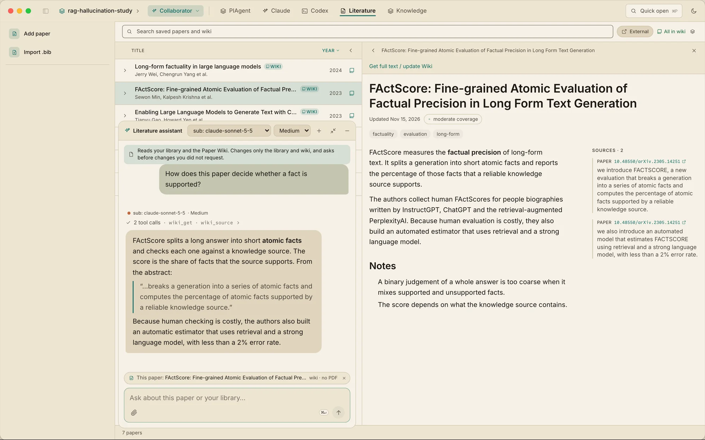
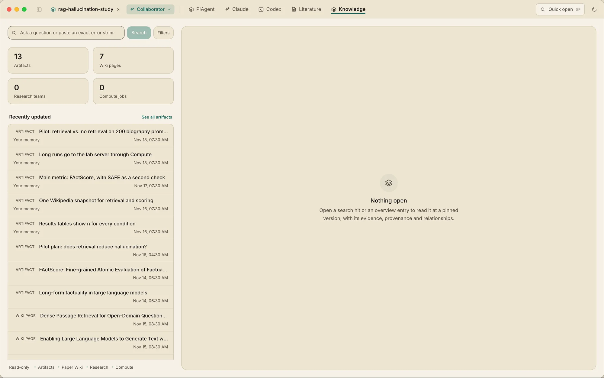
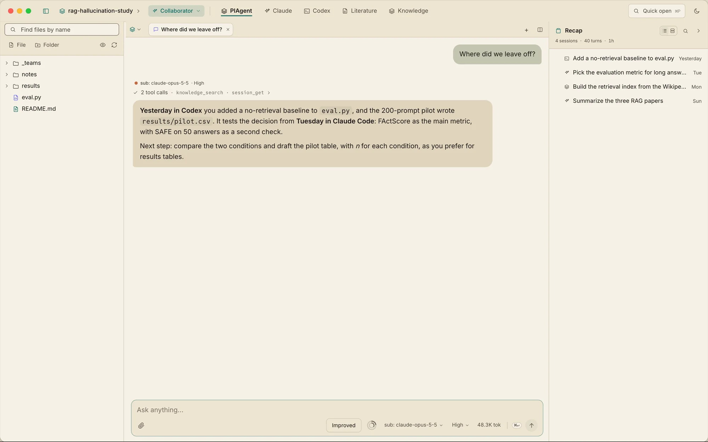
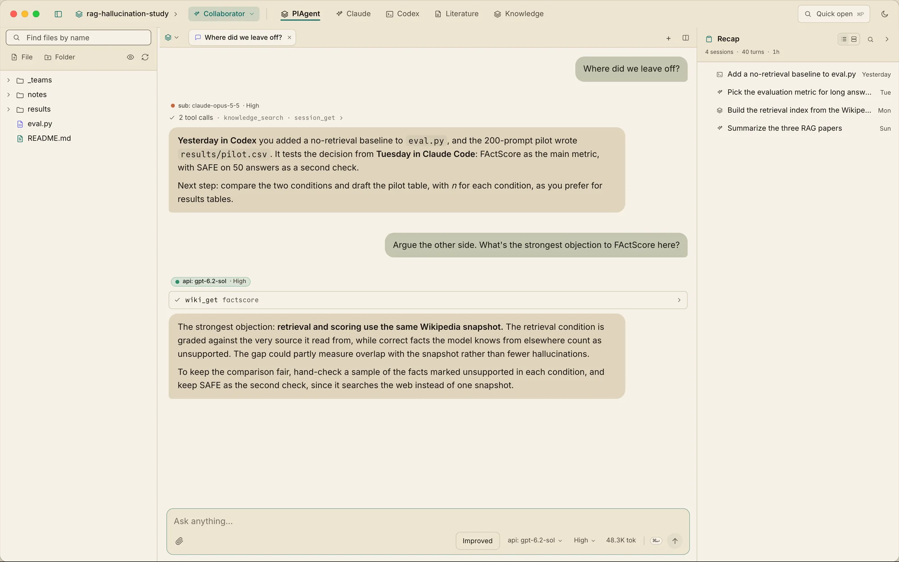
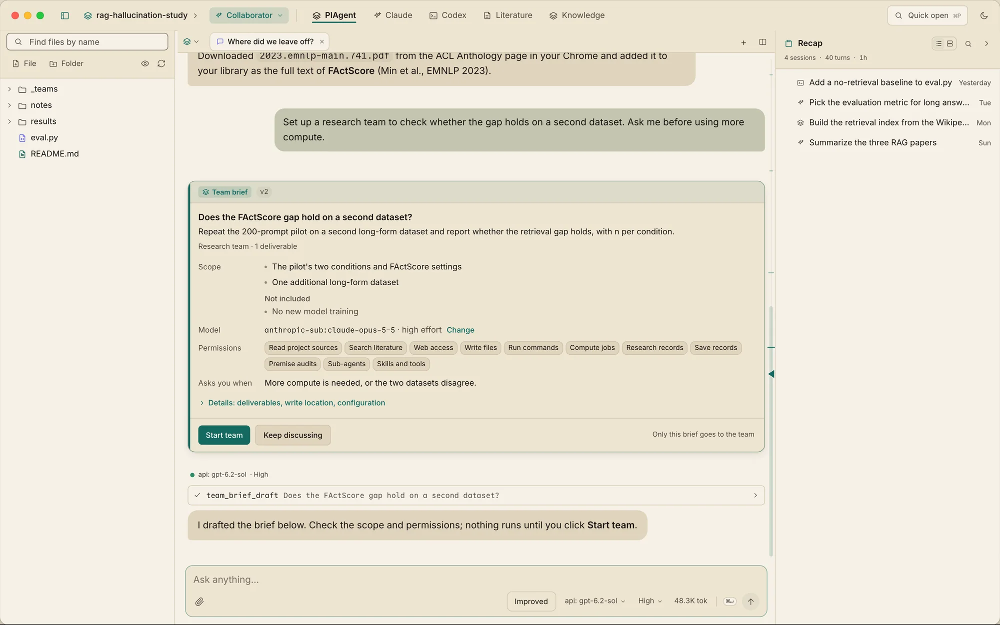
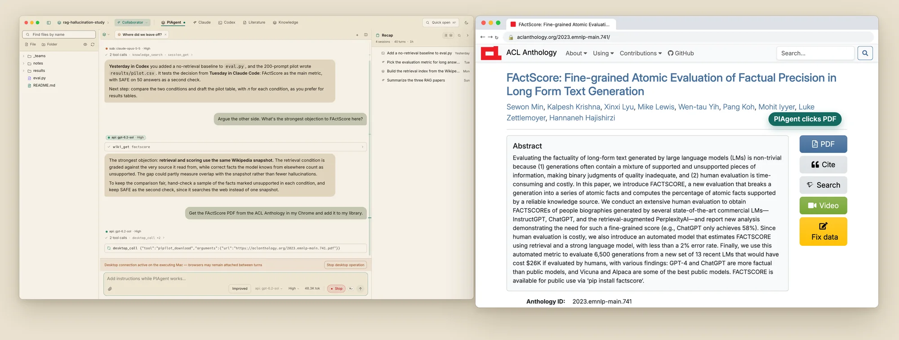

Research Pilot puts Claude Code, Codex and its own PIAgent in one desktop app — and keeps your papers, decisions and evidence after the conversation ends.
Works withClaude CodeCodexClaude & ChatGPT subscriptionsGitHub CopilotAnthropic & OpenAI API keysYour own model server
Why
Monday, you explain your project. Tuesday, you explain it again.
AI agents are good at research work, but each chat starts from nothing. Research Pilot gives every agent in a project the same papers, the same Paper Wiki and the same memory of what you decided — with dates and sources you can check.
Literature
Ask your papers. Check the answer against the source.
Open a paper in the Literature tab and ask the assistant about it, or about your whole library. Answers quote the paper, and the Paper Wiki keeps verbatim excerpts beside every summary, so you can check a claim in one glance.
Search academic indexes and import papers into your library
A Paper Wiki shared across your projects, with source excerpts
Add a PDF as a paper’s full text

Memory
It remembers what you decided.
Agents save the decisions, preferences and lessons worth keeping — each with its date, the conversation it came from and the context it applies to. Next week, a new conversation starts from them instead of from zero.
Browse, correct or forget any memory in the Knowledge tab
Tell an agent not to remember something, and it won’t
Memories point back to their sources; they are not taken as fact

Every agent
One memory for PIAgent, Claude Code and Codex.
Run Claude Code and Codex in their own tabs, or work with the built-in PIAgent. They share the project’s papers, Wiki and memory, and Recap lists every session in the project, whichever agent ran it.
Claude Code and Codex run as their real CLIs, with your login
PIAgent can read earlier Claude Code and Codex sessions
Split panes keep a conversation beside your files

Models
Switch models mid-conversation.
Pick any model PIAgent can reach — a Claude, ChatGPT or GitHub Copilot subscription you already pay for, an Anthropic or OpenAI API key, or a model on your own server — and keep the same conversation going. Every reply is labelled with the model that wrote it.
Subscription logins are shared with the Claude Code and Codex CLIs
Set the reasoning effort per conversation
Usage rings show how much of your plan is left

Teams
Hand bigger questions to a team.
Ask PIAgent for a team and it drafts a brief: the goal, the scope, the model, the permissions, and when the team must ask you. Nothing runs until you click Start team. Then members, messages and results stay with the conversation.
Research teams investigate; manuscript teams help you revise your draft
Answer a team’s questions from the card — or from your phone
Every step and result is recorded

Computer use · macOS
It can use your browser, too.
With your approval, PIAgent can work in apps on your Mac — for example, fetch a PDF from a publisher page in your own signed-in Chrome, in the background. The conversation shows whenever a desktop connection is active, with a button to stop it.
Approve per turn or per conversation
Downloaded PDFs can go straight into your library
macOS only for now

Phone
Pick it up on your phone.
Pair your phone once and follow or drive the same sessions away from your desk: read replies, send the next message, change the model, follow a team and answer its questions. Your computer does the work; the phone is a window into it.
PIAgent, Claude Code and Codex sessions
Notifications when a team needs you
Connects over Tailscale; your computer must stay on
Download the package for your computer. The app brings its own runtime — no Node.js, Docker or server to set up.
2
Connect a model
Sign in once with the Claude Code or Codex CLI, add an Anthropic or OpenAI API key, or point PIAgent at your own model server. The setup checklist says what is missing.
3
Open a project folder
An existing repository or an empty folder. Your files stay where they are; research records live in ~/.pipilot.
4
Ask
Try: “Explain this project and the research material already saved for it. Suggest one useful next step.”
FAQ
Questions
What do I need to use it?
A Mac with Apple Silicon, or Ubuntu/Debian on x86-64 or ARM64, and access to at least one model: a Claude or ChatGPT subscription signed in through the Claude Code or Codex CLI, a GitHub Copilot subscription, an Anthropic or OpenAI API key, or a compatible model server you run yourself. Model providers’ own charges and quotas apply.
Where is my data?
Research records — papers, the Paper Wiki, notes and memory — are stored on your computer under ~/.pipilot. Your documents and code stay in the project folders you choose. Local storage is not offline processing: the model providers and search services you configure receive the requests needed for their work.
What can the agents do on my computer?
Research Pilot launches Claude Code and Codex in unattended mode (--dangerously-skip-permissions and --dangerously-bypass-approvals-and-sandbox). They can run commands, edit or delete files and use the network with your user account’s permissions, without asking for each action. Use them for trusted tasks and keep backups. PIAgent asks before risky commands, and desktop control (computer use) needs your approval.
Can I use my own or a local model?
Yes. PIAgent can use a compatible model endpoint you host, alongside subscription logins and API keys. Claude Code and Codex use their own CLIs’ model settings.
Does it work on Windows or Intel Macs?
Not yet. Packages are built for macOS on Apple Silicon and for Ubuntu/Debian on x86-64 and ARM64. Computer use is available on macOS only.
How does the phone companion connect?
Install Tailscale on your computer and phone, turn on Settings → Phone in the desktop app, and scan the pairing code. Each phone gets its own key, which you can remove at any time. The computer must stay on.